14 The chordDiagram()
function#
One unique feature of circular layouts is visualizing relations
between objects with links, as illustrated in tabular visualization
examples at circos.ca. This
style of graphic is known as a Chord diagram. In
circlize-py, chord_diagram() (also
available via the R-style alias chordDiagram()) makes it
straightforward to draw Chord diagrams either with minimal defaults or
with fine-grained customization.
Relations can be represented in two data formats: an
adjacency matrix or an adjacency list.
In an adjacency matrix, the entry in the i-th row and
j-th column gives the connection from row object i to
column object j, with the absolute value measuring connection
strength. In an adjacency list, relations are stored as a three-column
pandas.DataFrame where links go from the first column to
the second column with strength in the third column.
An adjacency matrix can be represented as a labeled
pandas.DataFrame (or a 2D numpy.ndarray):
import numpy as np
import pandas as pd
mat = pd.DataFrame(
np.arange(1, 10).reshape((3, 3), order="F"),
index=list("abc"),
columns=list("ABC"),
)
mat A B C
a 1 4 7
b 2 5 8
c 3 6 9An adjacency list is a DataFrame with source, target, and value columns:
df = pd.DataFrame({"from": list("abc"), "to": list("ABC"), "value": [1, 2, 3]})
df from to value
0 a A 1
1 b B 2
2 c C 3You can convert cleanly between these two formats using
circlize_py.adjacency_matrix2list() and
circlize_py.adjacency_list2matrix().
A Chord diagram communicates relational structure at several levels:
- Links directly connect pairs of related objects.
- Link widths are proportional to relation strength, making magnitude comparisons immediate.
- Link colors provide an additional visual encoding (e.g., source identity, sign, or continuous intensity).
- Sector widths show each object’s total connection strength across all incoming and outgoing links.
In circlize-py, chord_diagram() accepts
both adjacency matrices (np.ndarray or named
pd.DataFrame) and adjacency lists
(pd.DataFrame), returning a pd.DataFrame with
link coordinates
(['rn', 'cn', 'value1', 'value2', 'o1', 'o2', 'x1', 'x2'],
plus 'col' when plotted). Depending on the input format,
per-link graphical parameters take either a 2D array / matrix-shaped
DataFrame / 3-column lookup DataFrame (for
matrix input) or a 1D vector/Series matching the number of rows (for
adjacency-list input). Below we focus primarily on matrix examples while
showing the corresponding adjacency-list idioms alongside them.
14.1 Basic usage of making Chord diagram#
First, let’s build a random 3x6 adjacency matrix and its equivalent adjacency list:
import matplotlib.pyplot as plt
import numpy as np
import pandas as pd
from circlize_py import chord_diagram, circos, color_ramp2, mm_h, rand_color
rng = np.random.default_rng(999)
arr = rng.permutation(np.arange(1, 19)).reshape((3, 6), order="F")
rn = [f"S{i}" for i in range(1, 4)]
cn = [f"E{i}" for i in range(1, 7)]
mat = pd.DataFrame(arr, index=rn, columns=cn)
df = pd.DataFrame(
{
"from": np.tile(rn, len(cn)),
"to": np.repeat(cn, len(rn)),
"value": arr.ravel(order="F"),
}
)The simplest plot just calls chord_diagram(mat)
(followed by circos.clear() to reset layout state):
chord_diagram(mat)
circos.clear()
Calling chord_diagram(df) with the adjacency list
produces the same diagram:
chord_diagram(df)
circos.clear()By default, a Chord diagram contains a sector-label track, a grid
track with axes, and connecting ribbons. Row sectors appear in the lower
half of the circle and column sectors in the upper half, ordered by
union(mat.index, mat.columns) (or
union(df.iloc[:, 0], df.iloc[:, 1])). You can reorder
sectors with order, whose length must match the total
number of sectors. Keeping row sectors (S*) contiguous and
column sectors (E*) contiguous improves readability;
interleaving them creates unnecessary crossings. See Multiple-group
Chord diagram for grouping more than two sets.
fig, (ax1, ax2) = plt.subplots(1, 2, figsize=(8.6, 4.3))
plt.sca(ax1)
chord_diagram(mat, order=["S2", "S1", "S3", "E4", "E1", "E5", "E2", "E6", "E3"])
circos.clear()
plt.sca(ax2)
chord_diagram(mat, order=["S2", "S1", "E4", "E1", "S3", "E5", "E2", "E6", "E3"])
circos.clear()
By default, grid colors are randomly assigned and each link inherits
its row sector’s color with transparency=0.5.
14.2 Adjust by circos.par()#
Because chord_diagram() is built on top of standard
circlize_py tracks, global layout parameters in
circos.par() apply directly. Remember to call
circos.clear() afterward so customized
circos.par() values do not leak into subsequent plots.
You can set sector gaps explicitly via
circos.par(gap_after=...) (an alias for
gap_degree) to visually separate row sectors from column
sectors:
circos.par(gap_after=[5] * (mat.shape[0] - 1) + [15] + [5] * (mat.shape[1] - 1) + [15])
chord_diagram(mat)
circos.clear()
With an adjacency list:
circos.par(
gap_after=[5] * (df["from"].nunique() - 1) + [15] + [5] * (df["to"].nunique() - 1) + [15]
)
chord_diagram(df)
circos.clear()As explained in Graphic parameters,
gap_after can also be a dictionary mapping sector names to
gap angles:
circos.par(
gap_after={
"S1": 5, "S2": 5, "S3": 15,
"E1": 5, "E2": 5, "E3": 5, "E4": 5, "E5": 5, "E6": 15,
}
)
chord_diagram(mat)
circos.clear()For the common two-group case where row and column names do not
overlap, passing big_gap directly to
chord_diagram() sets the gap between the two groups
automatically, while small_gap (default 1.0)
controls the spacing within each group:
chord_diagram(mat, big_gap=30)
circos.clear()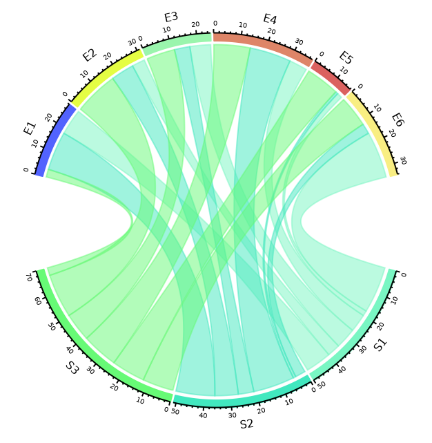
The first sector begins at circos.par(start_degree=...)
(default 0, right center) and proceeds clockwise when
clock_wise=True. Setting clock_wise=False
reverses direction, which twists links unless sector order is also
adjusted; reversing order while keeping
clock_wise=True preserves clean link routing:
fig, (ax1, ax2) = plt.subplots(1, 2, figsize=(8.6, 4.3))
plt.sca(ax1)
circos.par(start_degree=85, clock_wise=False)
chord_diagram(mat)
circos.clear()
plt.sca(ax2)
circos.par(start_degree=85)
chord_diagram(mat, order=list(reversed(mat.columns)) + list(reversed(mat.index)))
circos.clear()
14.3 Colors#
14.3.1 Set grid colors#
By default, links take the color of their source (row / first-column)
sector. grid_col sets sector grid colors, ideally via a
dictionary keyed by sector name (or a sequence matching sector order).
To color links by column sectors instead of row sectors, transpose the
matrix (mat.T):
grid_col = {
"S1": "red", "S2": "green", "S3": "blue",
"E1": "grey", "E2": "grey", "E3": "grey",
"E4": "grey", "E5": "grey", "E6": "grey",
}
fig, (ax1, ax2) = plt.subplots(1, 2, figsize=(8.6, 4.3))
plt.sca(ax1)
chord_diagram(mat, grid_col=grid_col)
circos.clear()
plt.sca(ax2)
chord_diagram(mat.T, grid_col=grid_col)
circos.clear()
14.3.2 Set link colors#
transparency controls link opacity from 0
(completely opaque) to 1 (completely transparent),
defaulting to 0.5:
chord_diagram(mat, grid_col=grid_col, transparency=0)
circos.clear()
For matrix input, you can supply a 2D array (or DataFrame) of link
colors matching mat.shape. When explicit alpha values are
already encoded in the colors (e.g., via
rand_color(..., transparency=0.5)),
transparency is preserved:
col_mat = np.asarray(rand_color(mat.size, transparency=0.5), dtype=object).reshape(mat.shape, order="F")
chord_diagram(mat, grid_col=grid_col, col=col_mat)
circos.clear()
For an adjacency list df, pass a 1D list or Series of
length len(df):
col = rand_color(len(df))
chord_diagram(df, grid_col=grid_col, col=col)
circos.clear()When relation values are continuous, col accepts a
color_ramp2() mapping function:
col_fun = color_ramp2(
[float(mat.to_numpy().min()), float(mat.to_numpy().max())],
["#FFEEEE", "#FF0000"],
transparency=0.5,
)
chord_diagram(mat, grid_col=grid_col, col=col_fun)
circos.clear()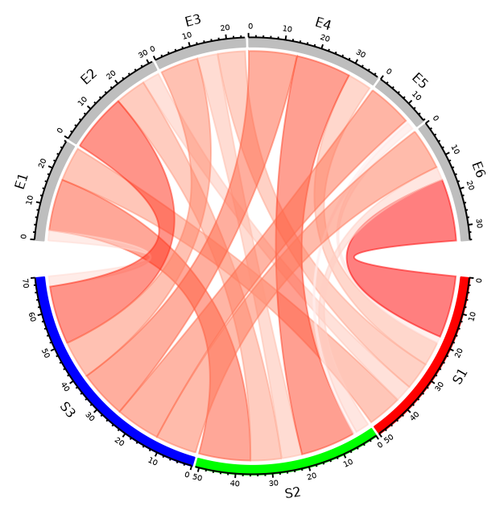
The same callable works with adjacency lists:
chord_diagram(df, grid_col=grid_col, col=col_fun)
# or equivalently:
chord_diagram(df, grid_col=grid_col, col=col_fun(df["value"]))
circos.clear()For matrix input, row_col and column_col
let you color links by row or column without affecting grid colors (R
integer palette indices 1..8, named colors, and hex strings
are all accepted):
fig, (ax1, ax2) = plt.subplots(1, 2, figsize=(8.6, 4.3))
plt.sca(ax1)
chord_diagram(mat, grid_col=grid_col, row_col=[1, 2, 3])
circos.clear()
plt.sca(ax2)
chord_diagram(mat, grid_col=grid_col, column_col=[1, 2, 3, 4, 5, 6])
circos.clear()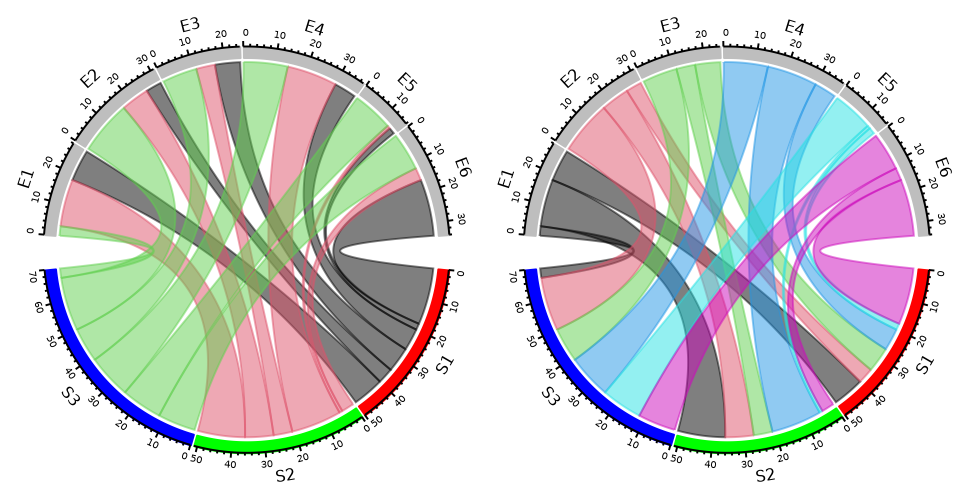
As before, any alpha channel already included in col,
row_col, or column_col overrides the global
transparency argument. See Highlight links for selective
highlighting.
14.4 Link border#
link_lwd, link_lty, and
link_border control ribbon border width, line style, and
border color. Each accepts a scalar, a 2D array matching
mat.shape, or a 3-column DataFrame.
With scalar values, all links share the same border style:
chord_diagram(mat, grid_col=grid_col, link_lwd=2, link_lty=2, link_border="red")
circos.clear()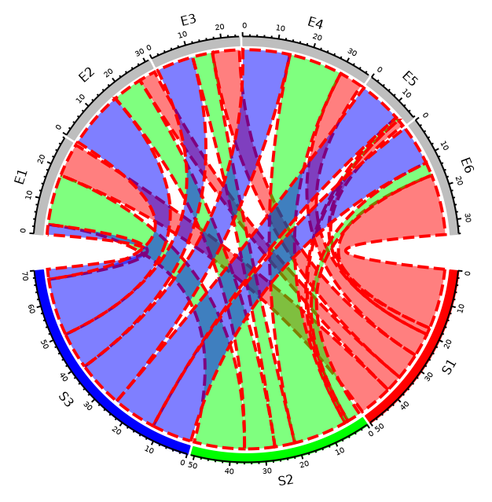
With full matrices matching mat.shape, use
np.nan (or "none") for links that should have
no visible border:
lwd_mat = np.ones(mat.shape, dtype=float)
lwd_mat[mat.to_numpy() > 12] = 2.0
border_mat = np.full(mat.shape, np.nan, dtype=object)
border_mat[mat.to_numpy() > 12] = "red"
chord_diagram(mat, grid_col=grid_col, link_lwd=lwd_mat, link_border=border_mat)
circos.clear()
To style a single row or subset of links while keeping other links
borderless, fill a matrix with np.nan and assign colors to
the target slice (or use a 3-column DataFrame when all
links have explicit styles):
border_mat2 = np.full(mat.shape, np.nan, dtype=object)
border_mat2[1, :] = "black" # highlight row S2
chord_diagram(mat, grid_col=grid_col, link_lwd=2, link_border=border_mat2)
circos.clear()
You can also pass a three-column DataFrame
(row_name, col_name, value) for link_lty,
link_lwd, and link_border:
lty_df = pd.DataFrame({"rn": ["S1", "S2", "S3"], "cn": ["E5", "E6", "E4"], "lty": [1, 2, 3]})
lwd_df = pd.DataFrame({"rn": ["S1", "S2", "S3"], "cn": ["E5", "E6", "E4"], "lwd": [2, 2, 2]})
border_df = pd.DataFrame({"rn": ["S1", "S2", "S3"], "cn": ["E5", "E6", "E4"], "border": [1, 1, 1]})
chord_diagram(mat, grid_col=grid_col, link_lty=lty_df, link_lwd=lwd_df, link_border=border_df)
circos.clear()
For an adjacency list df, pass vectors matching
len(df):
rng_s = np.random.default_rng(1)
chord_diagram(
df,
grid_col=grid_col,
link_lty=rng_s.integers(1, 4, size=len(df)),
link_lwd=rng_s.uniform(0.5, 2.0, size=len(df)),
link_border=rng_s.integers(0, 2, size=len(df)),
)
circos.clear()14.5 Highlight links#
Beyond link borders, you can highlight key relations by adjusting link colors and transparency or by filtering visibility.
To emphasize all links originating from one sector (S1),
pass per-row colors with low alpha for the remaining rows:
chord_diagram(mat, grid_col=grid_col, row_col=["#FF000080", "#00FF0010", "#0000FF10"])
circos.clear()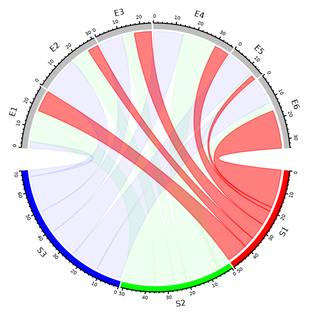
To highlight links above a numeric threshold, set smaller entries in
a color matrix to "#00000000" (fully transparent):
col_mat_hl = col_mat.copy()
col_mat_hl[mat.to_numpy() < 12] = "#00000000"
chord_diagram(mat, grid_col=grid_col, col=col_mat_hl)
circos.clear()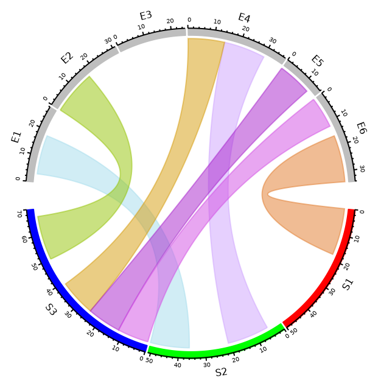
Equivalently, use a threshold function for either matrix or adjacency-list input:
col_fun_hl = lambda x: np.where(np.asarray(x) < 12, "#00000000", "#FF000080")
chord_diagram(mat, grid_col=grid_col, col=col_fun_hl)
circos.clear()While transparent links are still drawn (preserving sector widths),
passing a three-column DataFrame to col draws
only the listed links while still sizing sectors from the full
matrix:
col_df = pd.DataFrame(
{
"rn": ["S1", "S2", "S3"],
"cn": ["E5", "E6", "E4"],
"col": ["#FF000080", "#00FF0080", "#0000FF80"],
}
)
chord_diagram(mat, grid_col=grid_col, col=col_df)
circos.clear()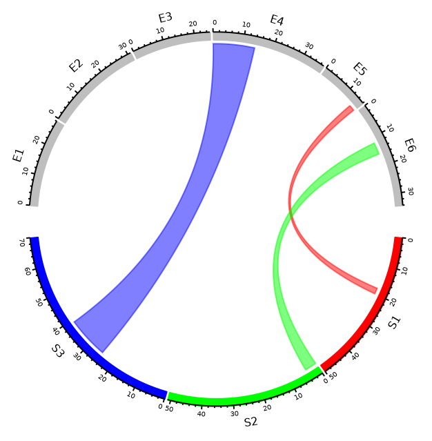
For an adjacency list, you can also modify a color vector directly:
col = np.asarray(rand_color(len(df)), dtype=object)
col[df["value"].to_numpy() < 10] = "#00000000"
chord_diagram(df, grid_col=grid_col, col=col)
circos.clear()When transparency is undesirable or you want links omitted completely
from rendering without changing sector sizes, use
link_visible with a boolean matrix or boolean vector:
chord_diagram(df, grid_col=grid_col, link_visible=df["value"] >= 10)
circos.clear()
14.6 Orders of links#
By default, chord_diagram() arranges link endpoints
within each sector to minimize crossings. To sort links on each sector
by width instead, set link_sort=True and control direction
with link_decreasing:
fig, (ax1, ax2) = plt.subplots(1, 2, figsize=(8.6, 4.5))
plt.sca(ax1)
chord_diagram(mat, grid_col=grid_col, link_sort=True, link_decreasing=True)
ax1.set_title("link_sort = True, link_decreasing = True", fontsize=9.5)
circos.clear()
plt.sca(ax2)
chord_diagram(mat, grid_col=grid_col, link_sort=True, link_decreasing=False)
ax2.set_title("link_sort = True, link_decreasing = False", fontsize=9.5)
circos.clear()
14.7 z-index of adding links#
Links are normally drawn in matrix/DataFrame row order. When drawing
opaque links (transparency=0), wide ribbons drawn early may
be covered by narrower ones drawn later. Setting
link_zindex places links with larger z-index values on
top:
from scipy.stats import rankdata
zmat = rankdata(mat.to_numpy()).reshape(mat.shape)
fig, (ax1, ax2) = plt.subplots(1, 2, figsize=(8.6, 4.5))
plt.sca(ax1)
chord_diagram(mat, grid_col=grid_col, transparency=0)
ax1.set_title("Default z-order", fontsize=10)
circos.clear()
plt.sca(ax2)
chord_diagram(mat, grid_col=grid_col, transparency=0, link_zindex=zmat)
ax2.set_title("link_zindex = rank(mat)", fontsize=10)
circos.clear()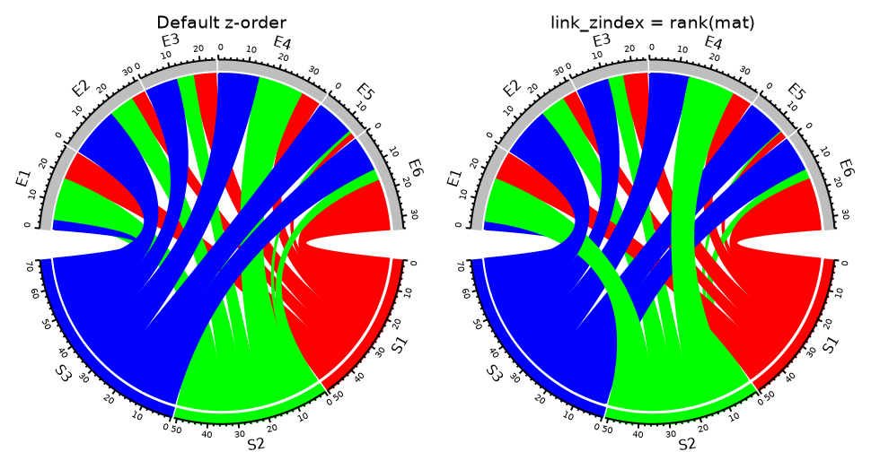
For an adjacency list:
chord_diagram(df, grid_col=grid_col, transparency=0, link_zindex=rankdata(df["value"]))
circos.clear()As a convenient shortcut for placing wider ribbons above narrower
ones without computing ranks manually, set
link_largest_ontop=True:
fig, (ax1, ax2) = plt.subplots(1, 2, figsize=(8.6, 4.5))
plt.sca(ax1)
chord_diagram(mat, grid_col=grid_col, transparency=0, link_largest_ontop=False)
ax1.set_title("link_largest_ontop = False", fontsize=10)
circos.clear()
plt.sca(ax2)
chord_diagram(mat, grid_col=grid_col, transparency=0, link_largest_ontop=True)
ax2.set_title("link_largest_ontop = True", fontsize=10)
circos.clear()
14.8 Self-links#
When an entry connects a sector to itself, self_link
controls whether the self-link consumes one interval
(self_link=1) or two intervals (self_link=2,
duplicating the width in sector totals):
df2 = pd.DataFrame({"start": ["a", "b", "c", "a"], "end": ["a", "a", "b", "c"]})
fig, (ax1, ax2) = plt.subplots(1, 2, figsize=(8.6, 4.5))
plt.sca(ax1)
chord_diagram(df2, grid_col=[1, 2, 3], self_link=1)
ax1.set_title("self_link = 1", fontsize=10)
circos.clear()
plt.sca(ax2)
chord_diagram(df2, grid_col=[1, 2, 3], self_link=2)
ax2.set_title("self_link = 2", fontsize=10)
circos.clear()
14.9 Symmetric matrix#
For symmetric matrices (such as correlation matrices), setting
symmetric=True plots only the lower triangular entries
without the diagonal, avoiding duplicate links:
rng_sym = np.random.default_rng(42)
mat3 = rng_sym.normal(size=(5, 5))
cor_mat = pd.DataFrame(np.corrcoef(mat3, rowvar=False), index=list("abcde"), columns=list("abcde"))
col_fun_sym = color_ramp2([-1, 0, 1], ["green", "white", "red"])
fig, (ax1, ax2) = plt.subplots(1, 2, figsize=(8.6, 4.5))
plt.sca(ax1)
chord_diagram(cor_mat, grid_col=[1, 2, 3, 4, 5], symmetric=True, col=col_fun_sym)
ax1.set_title("symmetric = True", fontsize=10)
circos.clear()
plt.sca(ax2)
chord_diagram(cor_mat, grid_col=[1, 2, 3, 4, 5], col=col_fun_sym)
ax2.set_title("symmetric = False", fontsize=10)
circos.clear()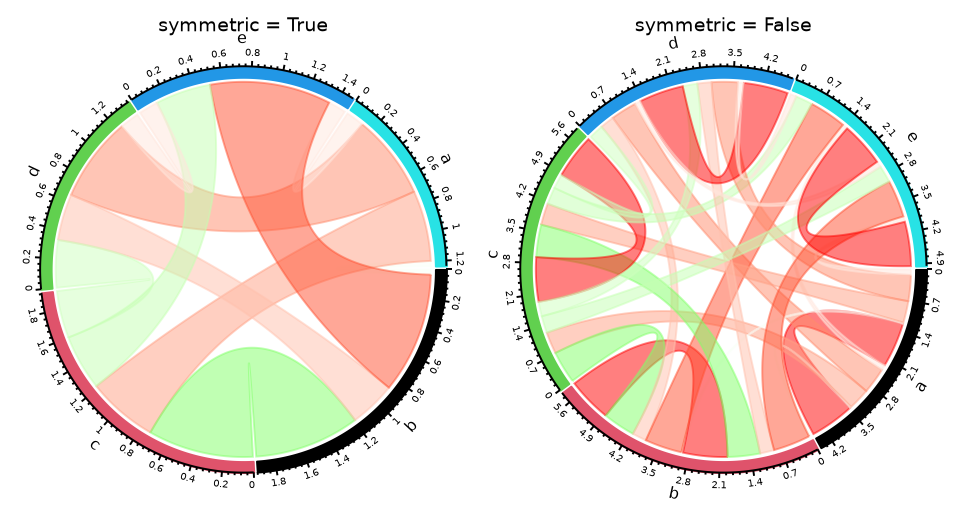
14.10 Directional relations#
When rows and columns (or the first and second DataFrame columns)
have a meaningful direction, set directional=1 (from rows
to columns), directional=-1 (from columns to rows), or
directional=2 (bi-directional).
By default, direction_type="diffHeight" shortens the
starting end by diff_height (mm_h(2) by
default; use a negative diff_height to make the source end
taller instead):
fig, (ax1, ax2, ax3) = plt.subplots(1, 3, figsize=(10.5, 3.6))
plt.sca(ax1)
chord_diagram(mat, grid_col=grid_col, directional=1)
circos.clear()
plt.sca(ax2)
chord_diagram(mat, grid_col=grid_col, directional=1, diff_height=mm_h(5))
circos.clear()
plt.sca(ax3)
chord_diagram(mat, grid_col=grid_col, directional=-1)
circos.clear()
Directional mode is especially helpful when row names and column names overlap:
rng2 = np.random.default_rng(77)
mat2 = pd.DataFrame(
rng2.permutation(np.arange(1, 101))[:35].reshape((5, 7), order="F"),
index=list("abcde"),
columns=list("abcdefg"),
)
chord_diagram(mat2, grid_col=list(range(1, 8)), directional=1, row_col=list(range(1, 6)))
circos.clear()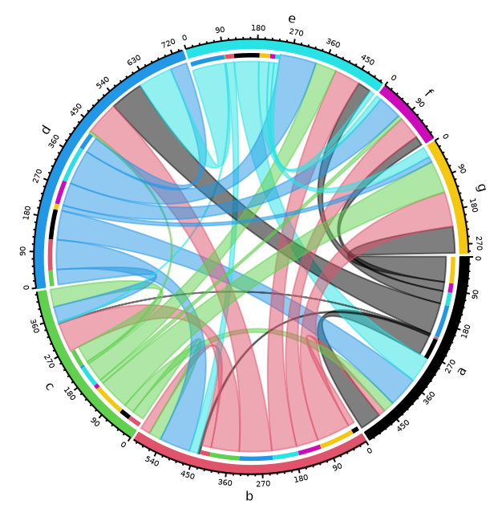
To suppress self-loops in such a matrix, zero out the shared diagonal entries before plotting:
mat3_ns = mat2.copy()
for cn_name in set(mat3_ns.index) & set(mat3_ns.columns):
mat3_ns.loc[cn_name, cn_name] = 0
chord_diagram(mat3_ns, grid_col=list(range(1, 8)), directional=1, row_col=list(range(1, 6)))
circos.clear()
Links can also display center arrows by setting
direction_type="arrows" (or
["diffHeight", "arrows"]). In circlize-py, you
can apply arrows selectively to a subset of links by passing a matrix or
three-column DataFrame to direction_type:
dt_mat = np.full(mat.shape, "none", dtype=object)
dt_mat[0, 4] = "arrows" # S1 -> E5
dt_mat[1, 5] = "arrows" # S2 -> E6
dt_mat[2, 3] = "arrows" # S3 -> E4
chord_diagram(
mat,
grid_col=grid_col,
directional=1,
direction_type=dt_mat,
link_arr_col="black",
link_arr_length=0.2,
)
circos.clear()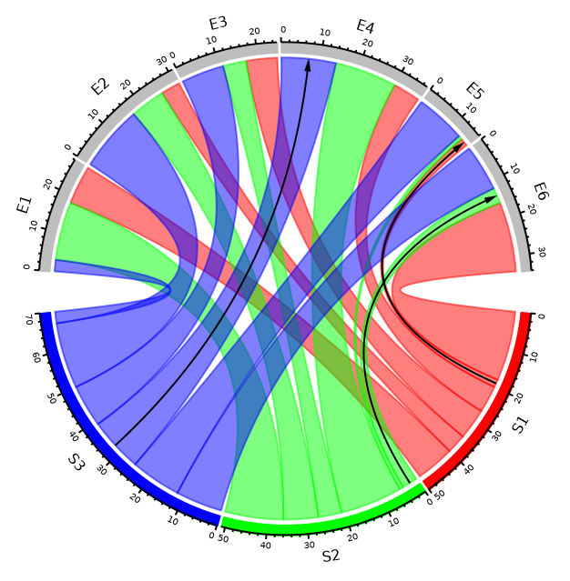
Combining "diffHeight" and "arrows" gives a
clear indication at both the link ends and center:
dt_df = pd.DataFrame(
{
"rn": ["S1", "S2", "S3"],
"cn": ["E5", "E6", "E4"],
"type": ["diffHeight+arrows", "diffHeight+arrows", "diffHeight+arrows"],
}
)
chord_diagram(
mat,
grid_col=grid_col,
directional=1,
direction_type=dt_df,
link_arr_col="black",
link_arr_length=0.2,
)
circos.clear()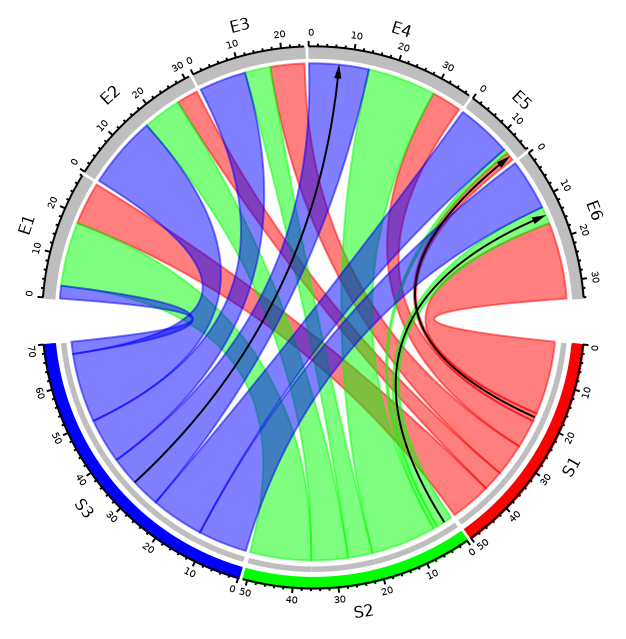
When there are many links, link_arr_type="big.arrow"
shapes the ribbon tip itself into an arrowhead instead of drawing
separate center arrows:
rng_x = np.random.default_rng(123)
matx = rng_x.normal(size=(8, 8))
chord_diagram(
matx,
directional=1,
direction_type=["diffHeight", "arrows"],
link_arr_type="big.arrow",
)
circos.clear()
Setting diff_height negative swaps which end is
longer:
chord_diagram(
matx,
directional=1,
direction_type=["diffHeight", "arrows"],
link_arr_type="big.arrow",
diff_height=-mm_h(2),
)
circos.clear()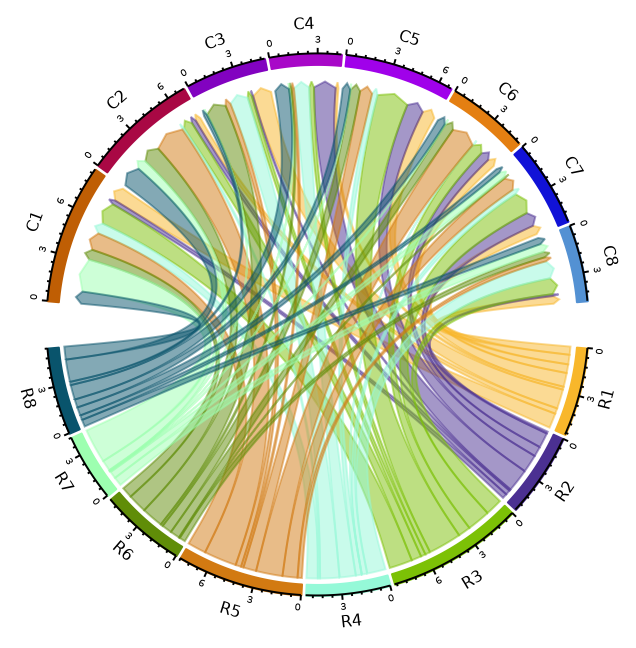
The same directional options work directly on adjacency-list
DataFrames (chord_diagram(df, directional=1)).
When directional=1 and diff_height > 0,
colored indicator bars along the inner edge of source sectors show the
proportion going to each target sector. Disable them with
link_target_prop=False or resize them with
target_prop_height:
fig, (ax1, ax2) = plt.subplots(1, 2, figsize=(8.6, 4.3))
plt.sca(ax1)
chord_diagram(mat, grid_col=grid_col, directional=1, link_target_prop=False)
circos.clear()
plt.sca(ax2)
chord_diagram(
mat,
grid_col=grid_col,
directional=1,
diff_height=mm_h(10),
target_prop_height=mm_h(8),
)
circos.clear()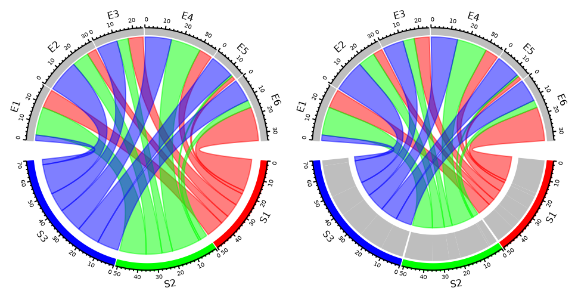
14.11 Scaling#
By default, sector widths reflect absolute sums of relation values.
Setting scale=True scales every sector to
[0, 1] so link widths show relative fractions within each
sector:
fig, (ax1, ax2) = plt.subplots(1, 2, figsize=(8.6, 4.5))
plt.sca(ax1)
chord_diagram(mat, grid_col=grid_col)
ax1.set_title("Default", fontsize=10)
circos.clear()
plt.sca(ax2)
chord_diagram(mat, grid_col=grid_col, scale=True)
ax2.set_title("scale = True", fontsize=10)
circos.clear()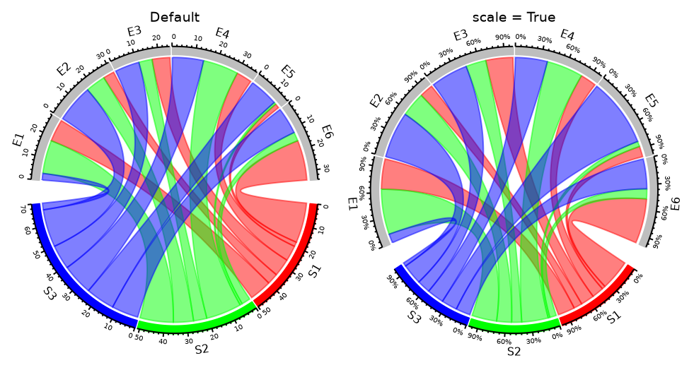
14.12 Reduce#
Sectors whose total contribution falls below reduce
(default 1e-5, as a fraction of the total sum across all
sectors) are automatically dropped along with their links and color/gap
entries:
mat_red = pd.DataFrame(
np.random.default_rng(123).normal(size=(6, 6)),
index=[f"R{i}" for i in range(1, 7)],
columns=[f"C{i}" for i in range(1, 7)],
)
mat_red.iloc[1, :] = 1e-10
mat_red.iloc[:, 2] = 1e-10
chord_diagram(mat_red)
circos.info()
circos.clear()All your sectors:
['R1', 'R3', 'R4', 'R5', 'R6', 'C1', 'C2', 'C4', 'C5', 'C6']
All your tracks:
[1, 2]Both R2 and C3 were removed automatically.
You can also set rows or columns explicitly to 0 to achieve
the same effect.
14.13 Input as a data frame#
When the input is an adjacency-list DataFrame, each row
corresponds to a single link, and per-link parameters
(transparency, col, link_border,
link_lwd, link_lty,
link_arr_length, link_arr_width,
link_arr_type, link_arr_lwd,
link_arr_lty, link_arr_col,
link_visible, link_zindex) can be supplied as
1D sequences matching len(df). Beyond parity with matrices,
DataFrames support two unique capabilities and sub-interval overlapping
layouts.
14.13.1 Multiple links between two sectors#
Unlike an adjacency matrix, a DataFrame can contain
multiple rows for the same sector pair—for example, separate positive
and negative links:
rng_m = np.random.default_rng(55)
pairs = [(r, c) for c in list("ABCD") for r in list("abc")]
df_pos = pd.DataFrame(pairs, columns=["from", "to"])
df_pos["value"] = rng_m.integers(1, 11, size=len(pairs))
df_neg = pd.DataFrame(pairs, columns=["from", "to"])
df_neg["value"] = -rng_m.integers(1, 11, size=len(pairs))
df_multi = pd.concat([df_pos, df_neg], ignore_index=True)
grid_col_m = {s: idx for idx, s in enumerate(list("abcABCD"), start=1)}
chord_diagram(
df_multi,
col=np.where(df_multi["value"] > 0, "red", "green"),
grid_col=grid_col_m,
)
circos.clear()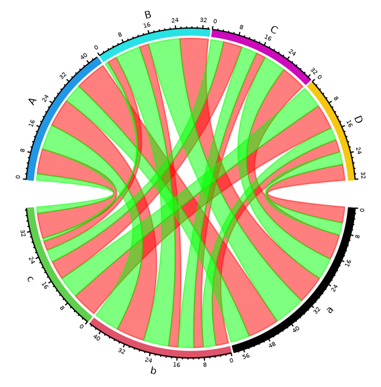
Using link_visible, you can split positive and negative
links across two side-by-side diagrams while keeping identical sector
widths:
fig, (ax1, ax2) = plt.subplots(1, 2, figsize=(8.6, 4.5))
plt.sca(ax1)
chord_diagram(df_multi, col="red", link_visible=df_multi["value"] > 0, grid_col=grid_col_m)
ax1.set_title("Positive links", fontsize=10)
circos.clear()
plt.sca(ax2)
chord_diagram(df_multi, col="green", link_visible=df_multi["value"] < 0, grid_col=grid_col_m)
ax2.set_title("Negative links", fontsize=10)
circos.clear()
14.13.2 Unequal width of the link ends#
If a DataFrame contains two numeric columns (columns 3 and 4), the
first specifies the link width at the source sector (rn)
and the second specifies the width at the target sector
(cn):
df_uneq = pd.DataFrame(pairs, columns=["from", "to"])
df_uneq["value"] = 1
df_uneq["value2"] = 3
fig, (ax1, ax2) = plt.subplots(1, 2, figsize=(8.6, 4.5))
plt.sca(ax1)
chord_diagram(df_uneq.iloc[:, :3], grid_col=grid_col_m)
ax1.set_title("One column of values", fontsize=10)
circos.clear()
plt.sca(ax2)
chord_diagram(df_uneq.iloc[:, :4], grid_col=grid_col_m)
ax2.set_title("Two columns of values", fontsize=10)
circos.clear()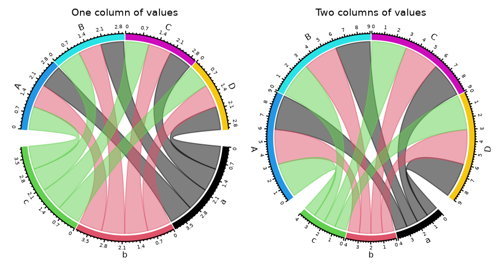
14.13.3 Overlapping
incoming and outgoing link intervals (link_overlap)#
When row and column sector names overlap in a directional diagram
(directional=1 or -1), incoming and outgoing
links are placed side-by-side along each sector by default
(link_overlap=False). Setting
link_overlap=True overlays outgoing (x1) and
incoming (x2) sub-intervals on the same
[0, max(out, in)] sector span:
mat_ov = pd.DataFrame(
[[0, 12, 8, 5], [6, 0, 10, 4], [9, 7, 0, 11], [3, 14, 6, 0]],
index=list("abcd"),
columns=list("abcd"),
)
gcol_ov = {"a": 1, "b": 2, "c": 3, "d": 4}
fig, (ax1, ax2) = plt.subplots(1, 2, figsize=(8.6, 4.5))
plt.sca(ax1)
chord_diagram(mat_ov, grid_col=gcol_ov, directional=1, link_overlap=False)
ax1.set_title("link_overlap = False", fontsize=10)
circos.clear()
plt.sca(ax2)
chord_diagram(mat_ov, grid_col=gcol_ov, directional=1, link_overlap=True)
ax2.set_title("link_overlap = True", fontsize=10)
circos.clear()